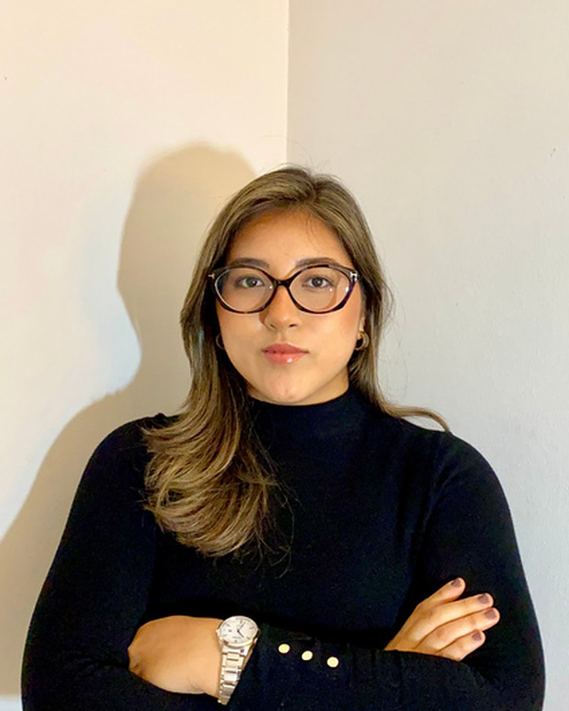

Protección de datos personales
Análisis y asesoría sobre el tratamiento de datos personales.

Abogada · Protección de Datos Personales, Privacidad y Tecnología
Conecto el derecho con la tecnología: la protección de datos como parte de la gestión del riesgo, la gobernanza y la confianza digital.
Soy abogada ecuatoriana especializada en protección de datos personales, privacidad y derecho de las tecnologías. Tengo experiencia en asesoría jurídica y consultoría, en proyectos de adecuación normativa y cumplimiento regulatorio para organizaciones del sector público y privado.
He participado en diagnósticos de cumplimiento, identificación de actividades de tratamiento, análisis y evaluación de riesgos, evaluaciones de impacto, elaboración de instrumentos jurídicos y políticas institucionales, y diseño de procedimientos para la gestión de datos personales. También he trabajado en la delimitación de responsabilidades entre los actores del tratamiento, la privacidad desde el diseño y por defecto, y la construcción de mecanismos de gobernanza y responsabilidad proactiva.
Analizo lo que deciden las autoridades de protección de datos de Europa y América Latina y lo traduzco a lo que significa para Ecuador.
Creo que la tecnología se puede explicar sin jerga, y que hay que hacerlo sin miedo.
Trayectoria, formación y certificacionesUniversidad Carlos III de Madrid, España

Perfil completoAnálisis y asesoría sobre el tratamiento de datos personales.
Ley Orgánica de Protección de Datos Personales y normativa conexa.
Regulación de servicios digitales y entornos tecnológicos.
Riesgos asociados al tratamiento de datos y su mitigación.
Roles, políticas y evidencias que demuestran el cumplimiento.
Evaluación de tratamientos de alto riesgo para los derechos de las personas.
Obligaciones, contratos y distribución de responsabilidades.
Garantías incorporadas en productos, procesos y proyectos.
La diferencia entre publicar un documento y garantizar transparencia en el tratamiento de datos personales: la LOPDP, el enfoque por capas y el Legal Design.
Oct. 21 2026Análisis de resoluciones de autoridades de protección de datos de Europa y América Latina, y lo que cada una enseña a las organizaciones en Ecuador.
[El aprendizaje práctico: qué disposición de la LOPDP se relaciona y qué debería revisar hoy una organización ecuatoriana.]
Resoluciones de la autoridad francesa de protección de datos.
Decisiones bajo la LGPD, la referencia regional más cercana.
Una de las autoridades más activas en inteligencia artificial.
Resoluciones de la Superintendencia de Protección de Datos Personales.
Aún no hay análisis publicados de esta autoridad.
Análisis de los retos que plantean los asistentes de IA que graban, transcriben y resumen reuniones, a la luz de la normativa de protección de datos.
Versión pública próximamenteQué datos se tratan, con qué finalidad y bajo qué base de legitimación.
Inventario de flujos de datos, sistemas, responsables y encargados.
Valoración de riesgos para los derechos de las personas y medidas para mitigarlos.
Políticas, cláusulas, contratos y procedimientos a la medida.
Roles, controles y registros que permiten demostrar el cumplimiento.
Abierta a colaboraciones profesionales y académicas, proyectos de consultoría y oportunidades en derecho digital, privacidad y ciberseguridad.
Privacidad con rigor. Tecnología sin miedo.